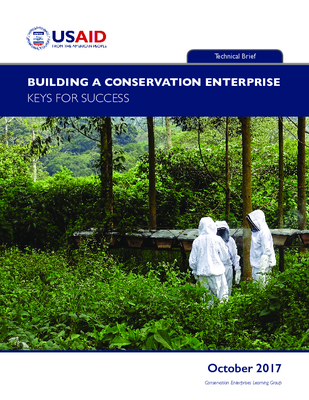
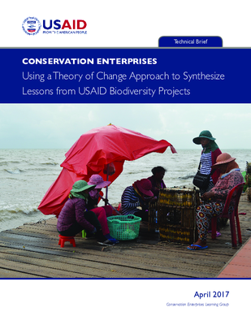
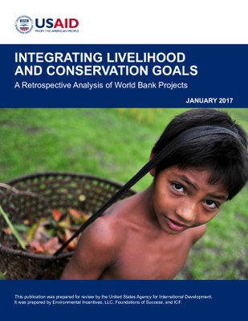

Documents for Conservation Enterprises
Reference Documents
This page contains references relevant to the conservation enterprises Collaborative Learning Group. Use the Submit New Content button or contact us directly to suggest new documents, links, or videos.
Featured Publications
-
Nov 8, 2017

Building a Conservation Enterprises: Keys for Success "Building a Conservation Enterprise: Keys for Success” is a summary of the guidance from key resource documents on the enabling conditions that support a sustainable enterprise. It includes important insights grounded in the literature that can be applied directly to the design of conservation enterprise approaches. An easy-to-use checklist is provided for quick reference. -
Apr 12, 2017

Conservation Enterprises: Using a Theory of Change Approach to Synthesize Lessons from USAID Biodiversity Projects This brief synthesizes lessons from past USAID-funded efforts to support conservation enterprises in an effort to increase understanding of activities and outcomes, and to improve the effectiveness of biodiversity programming. -
Apr 6, 2017
![In this brief, the United States Agency for International Development (USAID) Bureau for Economic Growth, Education, and Environment (E3) Office of Forestry and Biodiversity (FAB) Measuring Impact (MI) project examined the evidence presented in the studies included in Roe et al.’s systematic review of alternative livelihood activites. MI examined the evidence in these studies relative to the assumptions in the theory of change described for conservation enterprises. Key findings include the following: 1) None of the assessments of activities supporting conservation enterprises were designed with a clear theory of change making it difficult to relate some of the outcomes that were measured to the assumptions underlying the strategic approach; 2) Most established enterprises generated economic benefits; 3) Economic benefits co-occurred with positive changes in behavior only about half the time; and 4) There was virtually no assessment of whether changes in behavior led to threat reduction.](inbox/conservation-enterprises-using-a-theory-of-change-approach-to-examine-evidence-for-biodiversity-conservation/@@images/c563b8f9-bf98-4480-9c90-16041cd165a9.png "Conservation Enterprises: Using a Theory of Change Approach to Examine Evidence for Biodiversity Conservation")
Conservation Enterprises: Using a Theory of Change Approach to Examine Evidence for Biodiversity Conservation This brief cross-references the evidence from a recent systematic review of alternative livelihood with the assumptions in the learning group's theory of change for conservation enterprises.
-
Feb 01, 2017
![This checklist can be used by practitioners to help plan their conservation enterprise approach. The questions help to identify the important considerations in the context of a particular site. The first set of questions is related to understanding the theory of change for the conservation enterprise approach. The second set of questions focuses on building and improving the necessary enabling conditions focused on the establishment and sustainability of the enterprise itself. The third set of questions focuses on the necessary enabling conditions for assuring other outcomes along the theory of change. The last set of questions are for reflecting on how practitioners will know if the enterprise approach is achieving its purpose of biodiversity conservation. For more information and an example, watch the webinar Setting up for Success: Enabling Conditions for Conservation Enterprises.](inbox/conservation-enterprise-planning-checklist/@@images/437ac950-a7e7-4a5e-b5a4-107ffe0c4bc9.png "Conservation Enterprise Planning Checklist")
Conservation Enterprise
Planning Checklist This checklist is a tool to help practitioners plan a conservation enterprise approach. -
Jan 31, 2017

New Resource: Integrating Conservation & Livelihoods This brief cross-references the evidence from a recent systematic review of alternative livelihood with the assumptions in the learning group's theory of change. -
Nov. 6, 2016

Cross-Mission Learning Agenda
for Conservation Enterprises The Learning Agenda outlines the priority learning questions that, if answered, would improve the ability of USAID and others to design and implement conservation enterprise approaches.